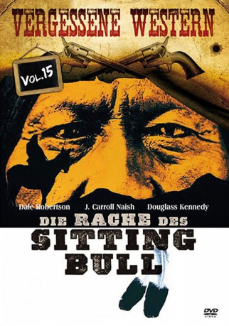

#6660 Das Letzte Gefecht
Alternativ: Rache des Sitting Bull, Die
 
 IMDB-Wertung: 5.7 / 10
IMDB-Wertung: 5.7 / 10  Metascore: 0
Metascore: 0 
1876 am Little Big Horn: Die Sioux-Indianer liefern sich eine blutige Schlacht mit den Truppen General Custers. Major Parrishs Sympathie für die Indianer wird ihm zum Verhängnis: Nach einem Gespräch mit Häuptling Sitting Bull wird er des Verrats beschuldigt und zum Tode verurteilt. Nur der Präsident kann ihn noch retten.
Jahr: 1954
Dauer: 101 Minuten
FSK: 12
Land: Mexiko Studio: United ArtistsTonspuren: DD2.0 - ,
Untertitel:
Auflösung: 1080p (1920x1080) Größe: 9943 MB
Genre: Western
Regisseur: Sidney Salkow
Drehbuch: Jack DeWitt
Soundtrack:
Darsteller:
- Dale Robertson als Major Robert 'Bob' Parrish
- Mary Murphy als Kathy Howell
 J. Carrol Naish als Sitting Bull
J. Carrol Naish als Sitting Bull- John Litel als Gen. Wilford Howell
- Iron Eyes Cody als Crazy Horse
- John Hamilton als President Ulysses S. Grant
 Douglas Kennedy als Col. Custer
Douglas Kennedy als Col. Custer William Tannen als O'Connor
William Tannen als O'Connor- William Hopper als Charles Wentworth
 Bill Coontz als Trooper Foster , uncredited
Bill Coontz als Trooper Foster , uncredited Whitey Hughes als Trooper , uncredited
Whitey Hughes als Trooper , uncredited- Joel Fluellen als Sam
- Thomas Browne Henry als Indian Agent Webber
- Ana Robinson Calles als White Cloud , uncredited
- Félix González als Young Buffalo , uncredited
Datei: X:\HD-Western-1900-1959\Letzte Gefecht, Das (1954, FSK12, 1920x1080).mkv seit 31.07.2017
Festplatte: HD Eastern+Western
 Es gibt insgesamt 98 Filme in der Gruppe 'HD-Western-1900-1959'
Es gibt insgesamt 98 Filme in der Gruppe 'HD-Western-1900-1959'